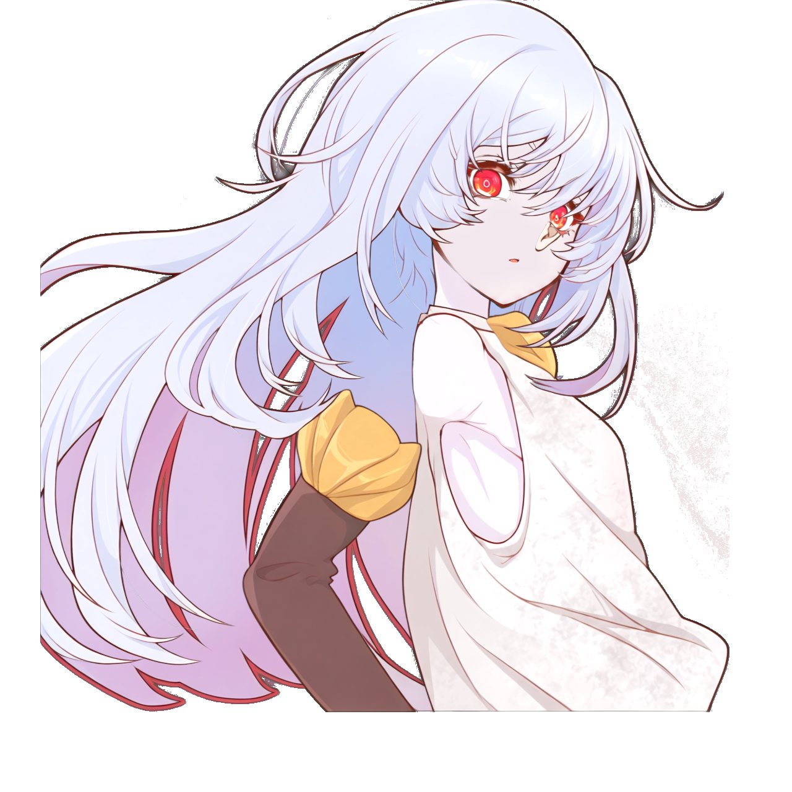

Phase 1 inspection and hard-stop report · 4 November 2026
Stopped before artwork creation or riggingStandRig's installed MCP operator contract and guide require a full-body target sheet and connection targets including waist, thighs and lower legs before the first PSD modeling write. They state no exception for bust-up models. The provided PSD is cropped to the upper body and has no lower-body artwork. Producing those missing targets as if they came from the PSD would fabricate evidence. Under the user's scope-related hard-stop rule, work stops here.
The documentation does not explicitly ban bust-up models; the issue is the absence of a documented alternative to its mandatory full-body gate.
| Phase | Outcome |
|---|---|
| 1 · Inspection | Completed: hash, layer order, neutral composite, MCP contract, context and checkpoints reviewed. |
| 2 · Missing artwork | Not started because the scope hard stop was reached first. No v2 PSD or new art was created. |
| 3 · Artwork verification | Not run: no v2 artwork or neutral diff exists. |
| 4 · Import v2 | Not run. No StandRig model write was made. |
| 5 · Targets | Not run. Earlier concept images are drafts and are not acceptance evidence. |
| 6 · Rigging | Not run. No bindings, deformers or animated poses were added. |
| 7 · Report | This report records the hard stop and inspected state. |
Source PSD: ciel_upper_body_reference_repaired.psd
SHA-256: f19e8c7d2187913de7cf1633d1a88ff7d6153d09ea8a1322527f111e3db53279 — matches the requested hash.
Canvas: 1280 × 1280; 18 visible, non-empty pixel layers; no groups.
Current StandRig revision: rig-sha256-dc3b020ef5c985666d7ef9b02528d0a30cab66809774d9d9c36bfe7dc3d8139a.
Existing checkpoint for that revision: 988af116-5999-4493-9caa-d99f52ac08d6, created in the preceding run on 4 November 2026 at 07:32:32 UTC. It was listed and verified in this run; no new checkpoint was created.
Grok CLI MCP doctor found the StandRig server healthy and 21 tools. The contract and guide were read through MCP, followed by the context and checkpoint tools. A read-only Grok scope-inspection attempt was started but did not finish; its conclusions are not used as evidence.

This is the PSD composite rendered and inspected during the immediately preceding Stage 0. Small speckled artifacts are visible to the right of the torso; the far-eye/ear overlap warrants closer inspection. This is not an animated pose or a new QA pass.
Bottom to top. Bounding boxes are left, top, right, bottom in canvas pixels.
| # | Layer | Bounds |
|---|---|---|
| 1 | back hair | 65, 76, 1025, 1150 |
| 2 | neck | 694, 361, 808, 545 |
| 3 | topwear | 648, 490, 1179, 1151 |
| 4 | face-clean | 684, 132, 968, 499 |
| 5 | mouth | 820, 415, 841, 426 |
| 6 | eyebrow-r | 817, 195, 870, 251 |
| 7 | eyebrow-l | 913, 283, 966, 301 |
| 8 | nose | 879, 360, 896, 386 |
| 9 | ears-l | 864, 336, 918, 408 |
| 10 | ears-r | 633, 276, 689, 371 |
| 11 | arm-and-yellow-accessories | 389, 501, 902, 1151 |
| 12 | eyewhite-r | 757, 269, 827, 325 |
| 13 | eyewhite-l | 886, 328, 933, 375 |
| 14 | irides-r | 762, 269, 813, 320 |
| 15 | eyelash-r | 716, 247, 851, 328 |
| 16 | irides-l | 887, 329, 919, 372 |
| 17 | eyelash-l | 883, 303, 964, 385 |
| 18 | front hair | 65, 0, 1170, 1076 |
The mouth interior, separate eyelid artwork, hidden overlaps, and separated arm/accessory pieces were not created or verified in this run. Their appearance and coverage cannot be claimed. Human review may be needed for small, partially hidden facial artwork.
Resolve the mismatch between the bust-up-only scope and StandRig's full-body visual-reference requirement. A project owner can supply an applicable, documented bust-up workflow or provide the missing full-body source material and revise the scope. Only then should a new run proceed with artwork, neutral-diff verification, import and rigging under the applicable contract.
The requested target sequence also requires planning: targets made by applying parameters to an unrigged model cannot establish non-neutral motion before bindings exist. Do not label static or generated concept panels as verified model poses.
No v2 PSD, asset PNGs, artwork manifest, diff, new animated render or new checkpoint was produced. The source PSD and active StandRig model were not edited.